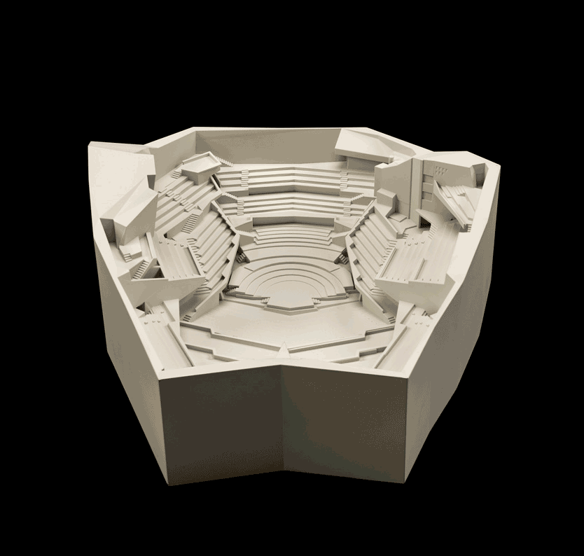
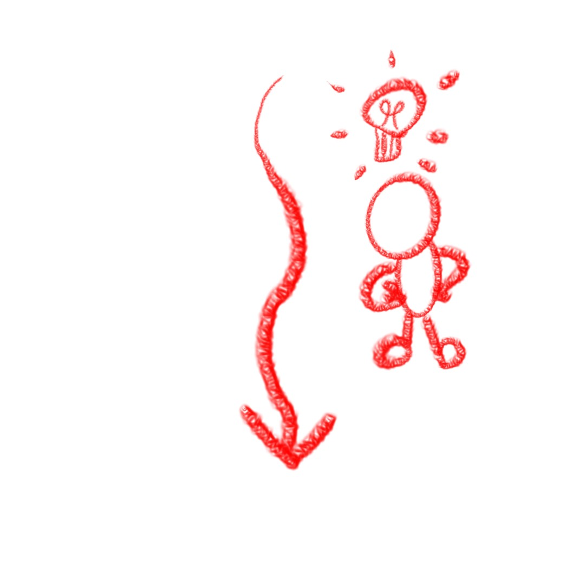
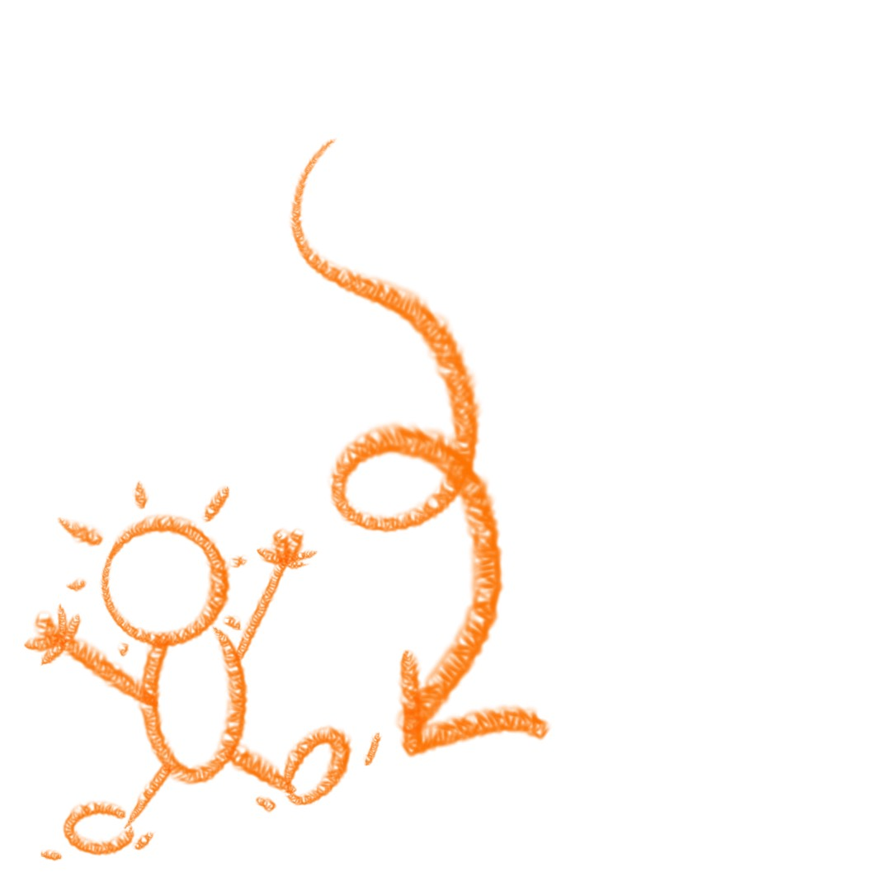
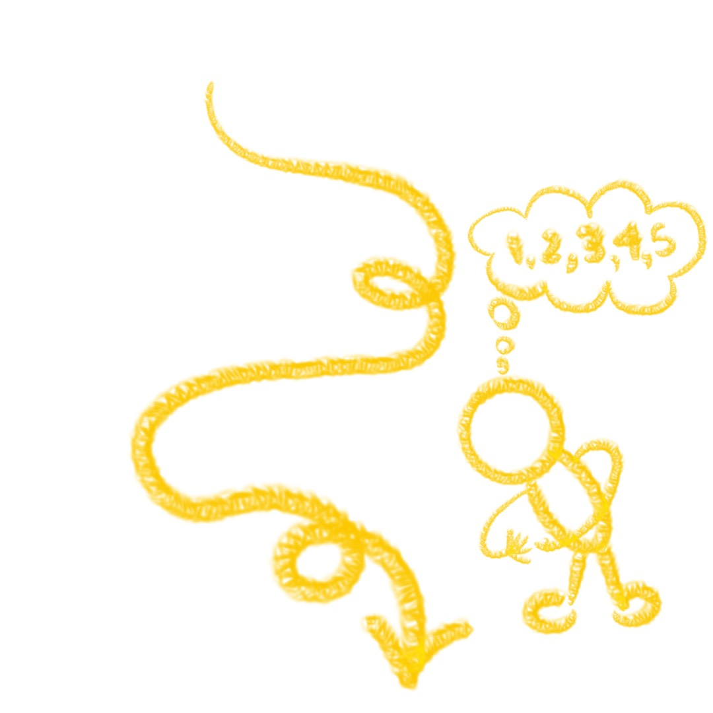
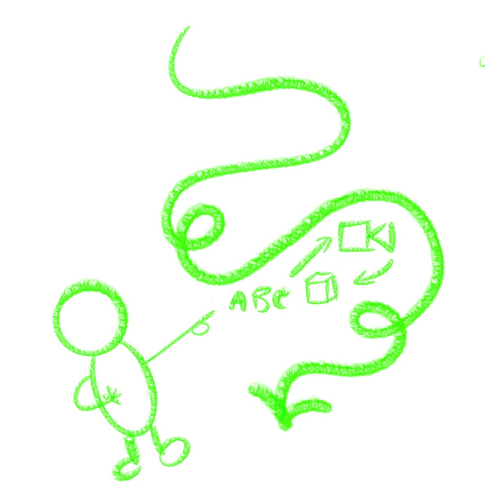
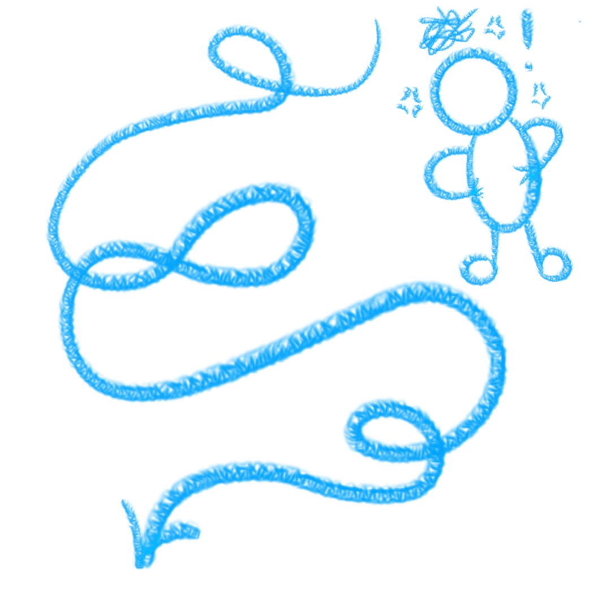

Sculpting Harmony excites the interaction by providing interactive web 3D models for the user to explore the Walt Disney Hall throughout points of its development. Architectural models of the musical hall allow to user to pan and observe the geometries of the building. This directly activates the user’s physical engagement by manipulating the viewpoint of these models and allows further immersion and provides reinforced insight into the exhibition’s communication. The Getty’s inclusions of such allow the user to observe and play with historical artifacts of the music hall’s development in real-time. It conveys a sense of realism and involvement with these histories, and empowers the education the art exhibit informs.
Following the interaction of a scrollytelling webpage, Sculpting Harmony depends on this interaction to initiate and progress the webpage experience. Display content is asynchronous with Dvorak’s Symphony 7 and correspondingly depends on the user’s scroll instead to reveal the exhibit’s elements. It provides a more immersive visual experience by triggering content to the user’s scroll and information is sequenced linearly and absorbed for the user’s comprehension of the digital exhibit. At various points of the sequence however, particularly at chapter titles, Sculpting Harmony adopts more conventional website interactions, allowing the user to click to skip and initiate the next section of content.
As the journey continues and reveals itself progressively with every scroll, it is clear that the user continues the exhibit with this downward scroll to its end. Along with following occasional exhibit commands and annotations to assist with navigation, downward scrolls become the foundational action to and the main path “forward”. Sculpting Harmony guides this experience through revealing new content with this single gesture. In sections and scene of stagnation, the webpage will provide text to determine the next intended action from the user to help progress the exhibit onward.
The webpage menu provides 5 different major sections and chapters to the web experience however, the length of each remains ambiguous to the user. There is no indication besides the side scroll bar to suggest the length. With each introduction of different interactive web sections, the changing video lengths disorient indications of the user’s progression. In way’s, the user is forced to remain in anticipation of the exhibit’s next presentation. Sculpting Harmony does allow the user to jump content offerings however, the original single scroll layout is preserved as the main path of the webpage/exhibitions navigation. By entering and exiting through exhibit content, users are eventually returned to this path as they absorb the website’s content as they switch between passive and active interaction with the website’s media.
As the user sequences through the story of Sculpting Harmony, the website transitions between written text, documentaries of interviews with Frank Gehry and 3D model of the Walt Disney Music Hall during its architectural development. The structuring of this digital content is still systemic however, it generally follows TEXT -> Video Documentary -> 3D Interactive Artifact. This formula structures the scrollytelling format for the digital art exhibit and its relative chapters. With some chapters exclusively exhibiting video media, user expectations are unintuitive, although this sensibility effectively makes users submit to the exhibit’s narrative and forthcoming story. It is evident that with the webpage’s experience, users are to simply absorb the exhibit and its presentations, opposed to a complete self-autonomy in its information. In this sense, the website becomes a strategic narrative experience, one to educate and insight readers of the Walt Disney Music Halls conception.
Although transitions assist continuity and seamlessness between the exhibit scenes, transitions and animations can become hindrances in user’s mobility up and down the webpage. While these are intended to immerse information between content and chapters, this affords the user time to process or complete these visual effects before they are able to return to previously viewed scenes or jump sections. While the website addresses this through a menu bar accessible in the top right, the menu in itself contains transitions for bold display fonts and transitions to transport the user back to specific sections of the exhibit.
Despite this, Sculpting Harmony by the Getty, and its website transport’s its audience into a deeply immersive web experience, translating its platform into a multisensory digital exhibit. The website’s scrollytelling content invites users to unwind, and allows it to display and sequence the experience for the user. With the simple gesture of a scroll, new content reveals itself with multimedia displays delivering the history of The Walt Disney Concert Hall’s conception. Homaging architectural and engineering pioneering, and cultural and community shifts, this experience preserves the site’s heritage by engaging and implementing text, image, video, and 3D computer graphic media, into a captivating digital account.